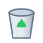

My Computer

Recycle Bin
Pinball 3D
Windows Media
Task Manager
MSN Messenger
Internet Explorer
3D Pinball for Windows - Space Cadet
Game
Pause
Help
SCORE: 000000
BALL: 1
RANK: CADET
Teclado: Z = Flipper Izq | / o ► = Flipper Der | Espacio = Lanzador
untitled - Paint
File
Edit
View
Image
Colors
Help
Windows Media Player
Symphony of Spring.wma
Windows XP Official Sample Music
Windows Task Manager
File
Options
View
Help
CPU Usage
24%
MEM Usage
194 MB / 512 MB
| Task | Status |
|---|---|
| 3D Pinball for Windows | Running |
| Paint | Running |
| Windows Media Player | Running |
| Windows Explorer | Running |
My Computer
File
Edit
View
Favorites
Tools
Help
3½ Floppy (A:)
Local Disk (C:)
CD-ROM Drive (D:)
Recycle Bin
File
Edit
View
Favorites
Tools
Help
Recycle Bin Tasks
old_notes_2001.txt
C:\Documents and Settings
MSN Messenger
File
Contacts
Actions
Help
XP
Administrator (Online)
<Personal Message: Listening to Symphony of Spring>
Online (2)
●
Bill Gates (Available)
●
Clippy (Busy)
Conversación iniciada con Bill Gates...
Bill Gates: ¡Hola! Bienvenido a Windows XP y a MSN Messenger.
MSN.com - Microsoft Internet Explorer
File
Edit
View
Favorites
Tools
Help
Address:
msn.
October 25, 2001 - Windows XP Launch Day
Microsoft Releases Windows XP Worldwide
Experience the best of the digital age with Windows XP: stunning Luna interface, enhanced multimedia capabilities, stable Windows NT 5.1 kernel, and seamless home networking.
Search the Web:
Highlights:
- MSN Messenger 6.0
- Windows Media Player 9
- Windows Movie Maker
- Remote Assistance